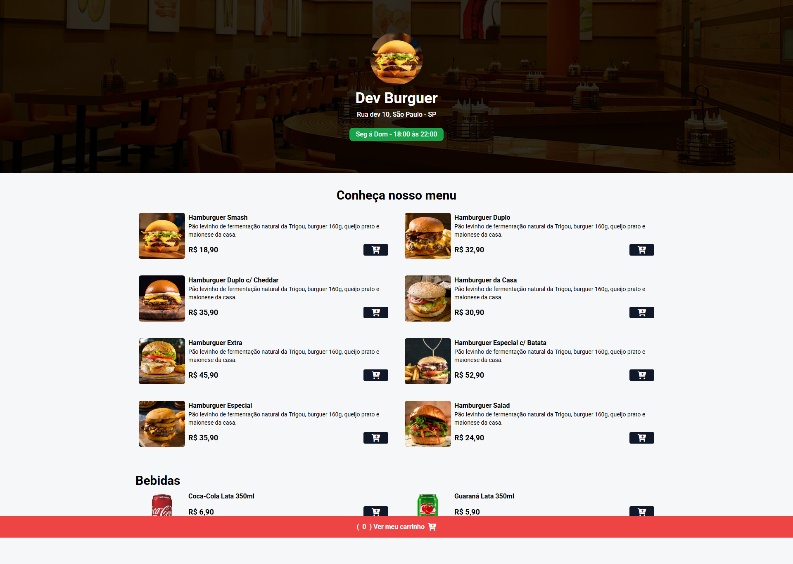
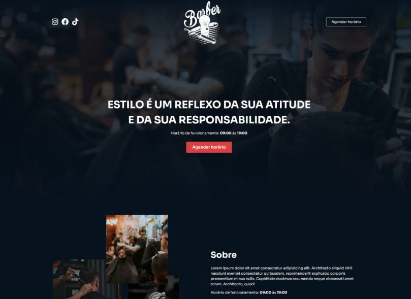

Desenvolvedor Full Stack
Olá, sou o Germeson!
Transformando ideias em soluções reais.
Desenvolvedor Full Stack
Transformando ideias em soluções reais.
Me chamo Germeson Martins, sou mineiro e apaixonado por tecnologia desde a infância. Moro em São Paulo-SP desde 2019, onde venho construindo minha trajetória profissional e buscando constantemente novos desafios e oportunidades de crescimento.
Sou graduado em Análise e Desenvolvimento de Sistemas e tenho experiência profissional em suporte e infraestrutura de TI. Ao longo da minha trajetória na área de tecnologia, venho me capacitando em desenvolvimento de software e direcionando minha carreira para o desenvolvimento Full Stack.
Atualmente, desenvolvo conhecimentos em JavaScript, TypeScript, React, Node.js, REST APIs, HTML e CSS, aplicando boas práticas de desenvolvimento, pensamento analítico e aprendizado contínuo.
Busco evoluir constantemente minhas habilidades, transformar ideias e necessidades em soluções digitais e contribuir para projetos desafiadores, agregando valor às equipes e aos resultados.
Skills
Experiência
Educação
Criação de interfaces modernas, responsivas e intuitivas, utilizando HTML, CSS, JavaScript e React, com foco em boas práticas, acessibilidade e experiência do usuário.
Saiba maisCriação de interfaces modernas, intuitivas e responsivas, aplicando princípios de UI/UX para proporcionar uma experiência clara, agradável e acessível.
Saiba maisCriação de interfaces modernas e responsivas para aplicativos, aplicando princípios de UI/UX para garantir usabilidade, consistência e uma boa experiência em diferentes dispositivos.
Saiba mais
